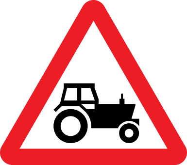

Loading...

Agricultural vehicles
⚠ Warning Signs
📖 Description
Warns that tractors or other slow‑moving agricultural vehicles may enter or cross the road. Drivers should reduce speed and overtake only when visibility and road conditions allow safe passing.